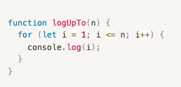
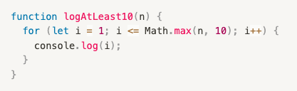
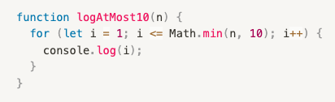
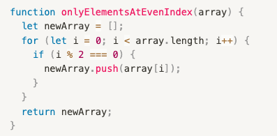
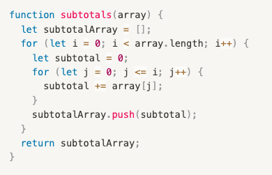
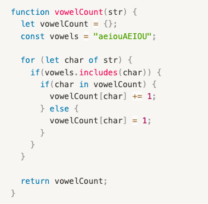

Step One: Simplifying Expressions
Simplify the following big O expressions as much as possible:
- O(n + 10) = O(n)
- O(100 * n) = O(n)
- O(25) = O(1)
- O(n^2 + n^3) = O(n^3)
- O(n + n + n + n) = O(n)
- O(1000 * log(n) + n) = O(n)
- O(1000 * n * log(n) + n) = O(n log n)
- O(2^n + n^2) = O(2^n)
- O(5 + 3 + 1) = O(1)
- O(n + n^(1/2) + n^2 + n * log(n)^10) = O(n^2)
Step Two: Calculating Time Complexity
Determine the time complexities for each of the following functions.
If you're not sure what these functions do,
copy and paste them into the console and experiment with different inputs!

Time Complexity: O(n)

Time Complexity: O(n)

Time Complexity: O(1)

Time Complexity: O(n)

Time Complexity: O(n^2)

Time Complexity: O(n)
Part 3 - short answer
Answer the following questions
- True or false: n^2 + n is O(n^2). TRUE
- True or false: n^2 * n is O(n^3). TRUE
- True or false: n^2 + n is O(n). FALSE
- What's the time complexity of the .indexOf array method? Answer: O(n)
- What's the time complexity of the .includes array method? Answer: O(n)
- What's the time complexity of the .forEach array method? Answer: O(n)
- What's the time complexity of the .sort array method? Answer: O(n log n)
- What's the time complexity of the .unshift array method? Answer: O(n)
- What's the time complexity of the .push array method? Answer: O(1)
- What's the time complexity of the .splice array method? Answer: O(n)
- What's the time complexity of the .pop array method? Answer: O(1)
- What's the time complexity of the Object.keys() function? Answer: O(n)
BONUS
- What's the space complexity of the Object.keys() function? Answer: O(n)